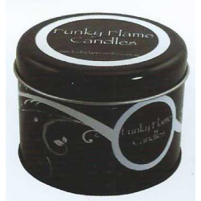
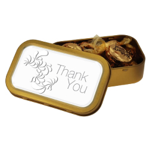
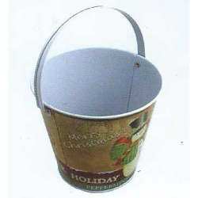

01
300個から対応
初めてのオリジナル缶や限定商品にも取り組みやすい、300個からの小ロットに対応。 必要な数量と予算のバランスを見ながら、無理のない仕様をご提案します。



提案前の概算相談、サンプル手配、技術説明、クライアントとの打ち合わせ参加もご相談ください。
I LOVE CANの特徴
PLAN / DESIGN / PRODUCTION
形状も印刷も、最初から決まっていなくて大丈夫です。用途と予算を伺い、 現物サンプルや画面を見ながら、実現しやすい仕様へ一緒に整理します。
初めてのオリジナル缶や限定商品にも取り組みやすい、300個からの小ロットに対応。 必要な数量と予算のバランスを見ながら、無理のない仕様をご提案します。
豊富な標準金型から選べば、新規の金型代は不要です。形状やサイズごとの特徴を整理し、 商品や使い方に合う缶をご案内します。
サイズ、形、印刷方法が決まっていない段階でも大丈夫です。入れるもの、用途、納期、 ご予算を伺いながら、実現しやすい仕様へ一緒に整理します。
大きさや素材感、ふたの開閉、印刷の見え方は現物で確認できます。既製サンプルの送付や、 本製造前の試作についてもプロジェクトに合わせてご相談いただけます。
- 利用者の声